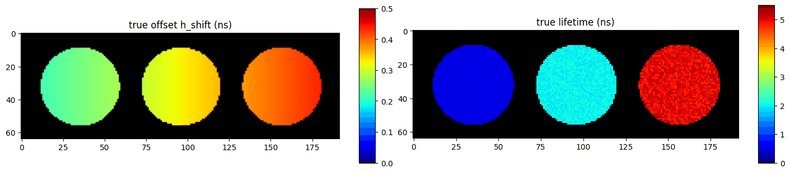
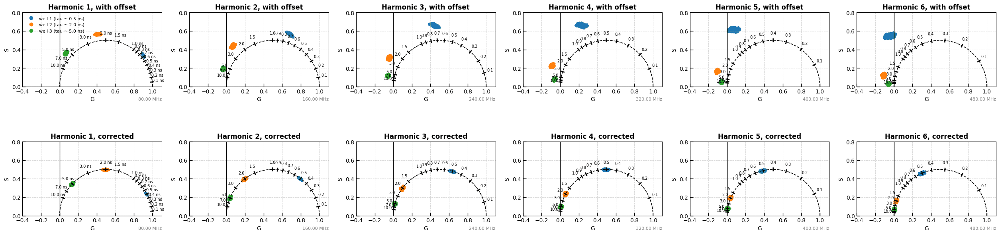
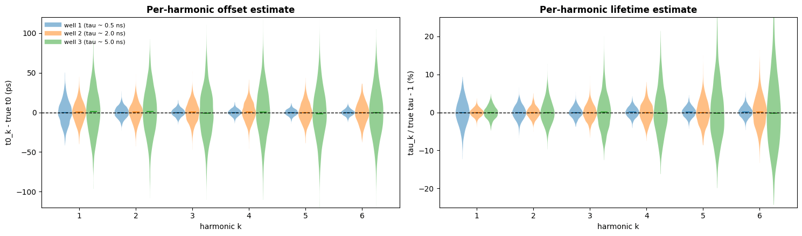
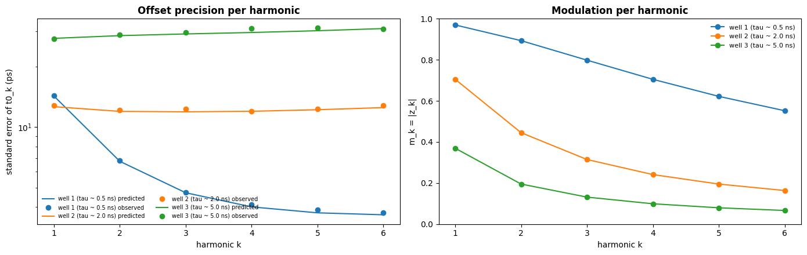
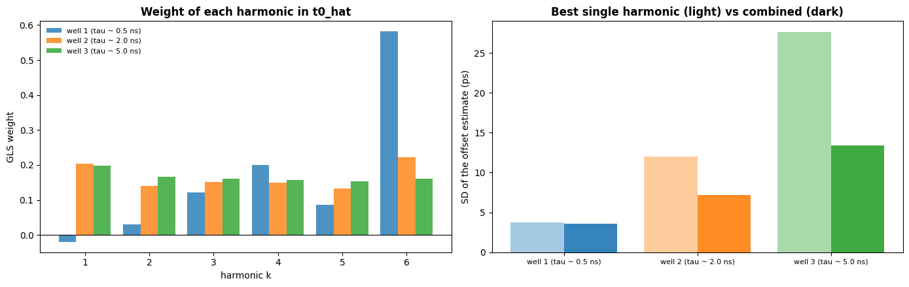
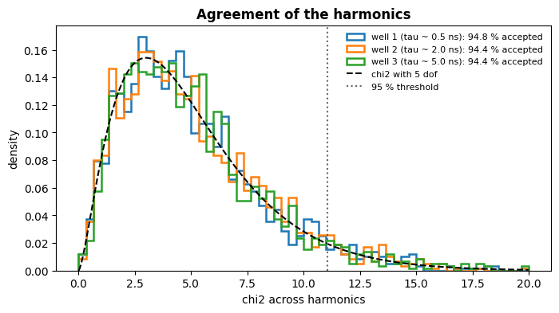
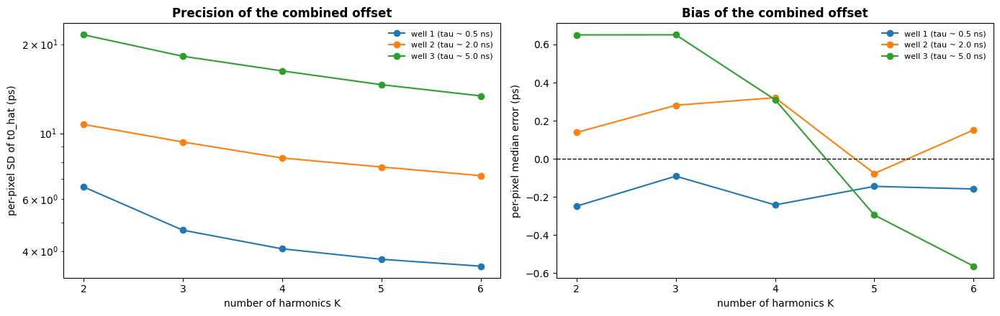
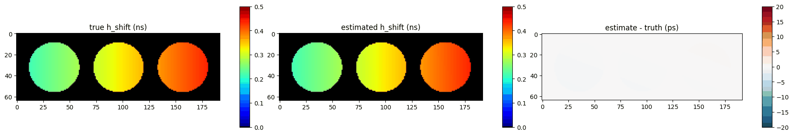

5. Harmonic offset with three lifetimes: what each harmonic contributes#
This example explains:
How the offset rotates the phasor at every harmonic
kbyk omega t0, so higher harmonics are rotated moreHow precise each harmonic is, and why that depends on the lifetime.
How the generalised least-squares combination weights the harmonics differently for each lifetime, and the chi-square test that checks they agree
The offset map and the corrected phasors and lifetimes of all three wells
Author - Vikas
import sys
import matplotlib.pyplot as plt
import numpy as np
import pandas as pd
from scipy.stats import chi2
sys.path.insert(0, "ex_helper")
from sim_general_image import ROIMaskGenerator, WellPlateShape
from pyfli.data_vnp import ColorProcessor, DataViewer
from pyfli.io import DataOperations
from pyfli.phasor.harmonic_offset import HarmonicOffset, correct_phasors, t0_from_h_shift
from pyfli.phasor.phasorS import PhasorAnalyzer
from pyfli.reconstruction import ParamToDecay
from pyfli.reconstruction.common_reconstruct import gate_starts
# Path to the local IRF file
IRF_PATH = "<select file/folder path>"
rng = np.random.default_rng()
LASER_HZ = 80e6
PERIOD_NS = 1e9 / LASER_HZ
OMEGA = 2 * np.pi * LASER_HZ * 1e-9
N_HARMONICS = 6
irf = np.clip(np.asarray(DataOperations(irf_path=IRF_PATH).load_irf(), dtype=float)[120, 40, :], 0.0, None)
irf /= irf.sum()
N_BINS = irf.size
t = gate_starts(PERIOD_NS, N_BINS)
generator = ROIMaskGenerator((64, 192), top=5, bottom=5, left=5, right=5)
three_wells = WellPlateShape(rows=1, cols=3, gap=0.12)
img_cluster = generator.generate_cluster_mask(three_wells)
mask = generator.generate_binary_mask(three_wells).astype(bool)
H, W = mask.shape
TAU_WELL = {1: 0.5, 2: 2.0, 3: 5.0}
well_names = {cid: f"well {cid} (tau ~ {tau} ns)" for cid, tau in TAU_WELL.items()}
COLORS = {1: (0.12, 0.47, 0.71), 2: (1.0, 0.5, 0.05), 3: (0.17, 0.63, 0.17)}
x = np.broadcast_to(np.linspace(0.0, 1.0, W), (H, W))
h_true = 0.20 + 0.25 * x
tau_true = np.zeros((H, W))
for cid, tau in TAU_WELL.items():
sel = img_cluster == cid
tau_true[sel] = tau * rng.uniform(0.95, 1.05, sel.sum())
truth = {
"tau1_map": tau_true,
"tau2_map": tau_true,
"alpha1_map": np.ones((H, W)),
"photon_count_map": np.where(mask, rng.uniform(1.5e4, 2.5e4, (H, W)), 0.0),
"v_shift_map": np.where(mask, 0.5, 0.0),
"h_shift_map": h_true,
}
expected = ParamToDecay("bi-exponential", LASER_HZ / 1e6, irf, shift_method="circular").reconstruct_vectorized(truth)
decay = rng.poisson(np.where(mask[..., None], expected["fit_map"], 0.0)).astype(float)
t0_true = t0_from_h_shift(h_true, t)
jet_m = ColorProcessor().lowest_zero("jet")
_ = DataViewer().display_data(
[np.where(mask, h_true, 0), np.where(mask, tau_true, 0)],
structure=(1, 2),
coord=None,
data_names=["true offset h_shift (ns)", "true lifetime (ns)"],
cmaps=[jet_m] * 2,
v_ranges=[(0, 0.5), (0, 5.5)],
figsize=(14, 3),
normalize=False,
yscale="linear",
)
INFO:pyfli:Initiating IRF load from: <select file/folder path>
Reconstructing decay (vectorized)...

5.1. The offset at every harmonic#
analyzer = PhasorAnalyzer(frequency_hz=LASER_HZ, time_axis_ns=t, n_harmonics=N_HARMONICS)
G, S = analyzer.create_phasor_cpu(decay)
Gc, Sc = analyzer.calibrate(G, S, irf)
result = HarmonicOffset(analyzer).estimate(decay, irf, order=1, v_shift=truth["v_shift_map"])
Gk, Sk = correct_phasors(Gc, Sc, result["t0_map"], LASER_HZ)
well_colors = np.zeros((H, W, 3))
for cid, color in COLORS.items():
well_colors[img_cluster == cid] = color
fig, axes = plt.subplots(2, N_HARMONICS, figsize=(4.2 * N_HARMONICS, 7))
for row, (g_all, s_all, label) in enumerate([(Gc, Sc, "with offset"), (Gk, Sk, "corrected")]):
analyzer.plot_phasor_harmonics(
g_all, s_all, harmonics=tuple(range(1, N_HARMONICS + 1)), mask=mask, colors=well_colors,
axes=axes[row], xlim=(-0.4, 1.1), ylim=(0.0, 0.8),
)
for k, ax in enumerate(axes[row]):
ax.set_title(f"Harmonic {k + 1}, {label}", fontweight="bold")
axes[0, 0].legend(
handles=[plt.Line2D([], [], marker="o", linestyle="", color=c, label=well_names[cid]) for cid, c in COLORS.items()],
frameon=False, fontsize=8, loc="upper left",
)
fig.tight_layout()
plt.show()

5.2. Per-harmonic estimates#
t0_err_ps = 1e3 * (result["t0_k"] - t0_true)
tau_rel = result["tau_k"] / tau_true - 1.0
fig, axes = plt.subplots(1, 2, figsize=(15, 4.5))
width = 0.25
for j, (cid, color) in enumerate(COLORS.items()):
sel = img_cluster == cid
positions = np.arange(1, N_HARMONICS + 1) + (j - 1) * width
for ax, values in [(axes[0], t0_err_ps), (axes[1], 100 * tau_rel)]:
parts = ax.violinplot([values[k][sel] for k in range(N_HARMONICS)], positions=positions, widths=width,
showmedians=True, showextrema=False)
for body in parts["bodies"]:
body.set_facecolor(color)
body.set_alpha(0.5)
parts["cmedians"].set_color(color)
axes[0].plot([], [], color=color, linewidth=6, alpha=0.5, label=well_names[cid])
for ax, label, lim in [(axes[0], "t0_k - true t0 (ps)", 120), (axes[1], "tau_k / true tau - 1 (%)", 25)]:
ax.axhline(0, color="k", linestyle="--", linewidth=1)
ax.set_xticks(range(1, N_HARMONICS + 1))
ax.set_xlabel("harmonic k")
ax.set_ylabel(label)
ax.set_ylim(-lim, lim)
axes[0].set_title("Per-harmonic offset estimate", fontweight="bold")
axes[1].set_title("Per-harmonic lifetime estimate", fontweight="bold")
axes[0].legend(frameon=False, fontsize=8)
fig.tight_layout()
plt.show()

5.3. Precision at each harmonic#
predicted_se = 1e3 * np.sqrt(np.moveaxis(np.diagonal(result["cov"], axis1=-2, axis2=-1), -1, 0))
modulation = np.abs(result["z"])
rows = []
fig, axes = plt.subplots(1, 2, figsize=(14, 4.5))
k_axis = np.arange(1, N_HARMONICS + 1)
for cid, color in COLORS.items():
sel = img_cluster == cid
pred = np.array([np.median(predicted_se[k][sel]) for k in range(N_HARMONICS)])
observed = np.array([np.std(t0_err_ps[k][sel]) for k in range(N_HARMONICS)])
m_k = np.array([np.median(modulation[k][sel]) for k in range(N_HARMONICS)])
axes[0].semilogy(k_axis, pred, "-", color=color, label=f"{well_names[cid]} predicted")
axes[0].semilogy(k_axis, observed, "o", color=color, label=f"{well_names[cid]} observed")
axes[1].plot(k_axis, m_k, "o-", color=color, label=well_names[cid])
for k in range(N_HARMONICS):
rows.append({"well": well_names[cid], "harmonic": k + 1, "m_k": m_k[k],
"predicted SE (ps)": pred[k], "observed SD (ps)": observed[k]})
axes[0].set_xlabel("harmonic k")
axes[0].set_ylabel("standard error of t0_k (ps)")
axes[0].set_title("Offset precision per harmonic", fontweight="bold")
axes[0].legend(frameon=False, fontsize=7, ncol=2)
axes[1].set_xlabel("harmonic k")
axes[1].set_ylabel("m_k = |z_k|")
axes[1].set_ylim(0, 1)
axes[1].set_title("Modulation per harmonic", fontweight="bold")
axes[1].legend(frameon=False, fontsize=8)
for ax in axes:
ax.set_xticks(k_axis)
fig.tight_layout()
plt.show()
pd.DataFrame(rows).pivot(index="harmonic", columns="well", values="predicted SE (ps)").round(1)

| well | well 1 (tau ~ 0.5 ns) | well 2 (tau ~ 2.0 ns) | well 3 (tau ~ 5.0 ns) |
|---|---|---|---|
| harmonic | |||
| 1 | 14.3 | 12.6 | 27.7 |
| 2 | 6.8 | 12.0 | 28.6 |
| 3 | 4.7 | 11.9 | 29.1 |
| 4 | 4.0 | 12.0 | 29.6 |
| 5 | 3.7 | 12.2 | 30.2 |
| 6 | 3.7 | 12.5 | 31.0 |
5.4. Combining the harmonics#
cov = result["cov"]
finite = np.isfinite(cov).all(axis=(-2, -1))
weights = np.full((H, W, N_HARMONICS), np.nan)
cinv_one = np.linalg.solve(cov[finite], np.ones((finite.sum(), N_HARMONICS, 1)))[..., 0]
weights[finite] = cinv_one / cinv_one.sum(axis=-1, keepdims=True)
t0_hat_err_ps = 1e3 * (result["t0_hat"] - t0_true)
fig, axes = plt.subplots(1, 2, figsize=(14, 4.5))
for j, (cid, color) in enumerate(COLORS.items()):
sel = img_cluster == cid
axes[0].bar(k_axis + (j - 1) * 0.27, np.nanmedian(weights[sel], axis=0), width=0.27, color=color,
alpha=0.8, label=well_names[cid])
best_single = min(np.std(t0_err_ps[k][sel]) for k in range(N_HARMONICS))
axes[1].bar(j - 0.2, best_single, width=0.4, color=color, alpha=0.4)
axes[1].bar(j + 0.2, np.std(t0_hat_err_ps[sel]), width=0.4, color=color, alpha=0.9)
axes[0].axhline(0, color="k", linewidth=0.8)
axes[0].set_xticks(k_axis)
axes[0].set_xlabel("harmonic k")
axes[0].set_ylabel("GLS weight")
axes[0].set_title("Weight of each harmonic in t0_hat", fontweight="bold")
axes[0].legend(frameon=False, fontsize=8)
axes[1].set_xticks(range(3))
axes[1].set_xticklabels([well_names[cid] for cid in COLORS], fontsize=8)
axes[1].set_ylabel("SD of the offset estimate (ps)")
axes[1].set_title("Best single harmonic (light) vs combined (dark)", fontweight="bold")
fig.tight_layout()
plt.show()
pd.DataFrame(
{
well_names[cid]: {
**{f"weight k={k + 1}": np.nanmedian(weights[img_cluster == cid][:, k]) for k in range(N_HARMONICS)},
"best single harmonic SD (ps)": min(np.std(t0_err_ps[k][img_cluster == cid]) for k in range(N_HARMONICS)),
"combined SD (ps)": np.std(t0_hat_err_ps[img_cluster == cid]),
}
for cid in COLORS
}
).round(3)

| well 1 (tau ~ 0.5 ns) | well 2 (tau ~ 2.0 ns) | well 3 (tau ~ 5.0 ns) | |
|---|---|---|---|
| weight k=1 | -0.019 | 0.203 | 0.198 |
| weight k=2 | 0.031 | 0.141 | 0.167 |
| weight k=3 | 0.121 | 0.151 | 0.161 |
| weight k=4 | 0.201 | 0.150 | 0.157 |
| weight k=5 | 0.086 | 0.132 | 0.153 |
| weight k=6 | 0.581 | 0.222 | 0.162 |
| best single harmonic SD (ps) | 3.751 | 12.006 | 27.613 |
| combined SD (ps) | 3.555 | 7.193 | 13.383 |
5.4.1. The chi-square test across harmonics#
chi2 = (t0_k - t0_hat)' C^-1 (t0_k - t0_hat) measures how well the harmonics agree. For a mono-exponential pixel it follows a chi-square distribution with K - 1 degrees of freedom whatever the lifetime, so one threshold works for every well; pixels above chi2_{K-1, 0.95} are rejected as not mono-exponential.
grid = np.linspace(0, 20, 400)
fig, ax = plt.subplots(figsize=(8, 4))
for cid, color in COLORS.items():
sel = img_cluster == cid
ax.hist(result["chi2"][sel], bins=np.linspace(0, 20, 61), density=True, histtype="step", linewidth=1.8,
color=color, label=f"{well_names[cid]}: {100 * result['accepted'][sel].mean():.1f} % accepted")
ax.plot(grid, chi2.pdf(grid, N_HARMONICS - 1), "k--", label=f"chi2 with {N_HARMONICS - 1} dof")
ax.axvline(chi2.ppf(0.95, N_HARMONICS - 1), color="0.4", linestyle=":", label="95 % threshold")
ax.set_xlabel("chi2 across harmonics")
ax.set_ylabel("density")
ax.legend(frameon=False, fontsize=8)
ax.set_title("Agreement of the harmonics", fontweight="bold")
plt.show()
pd.DataFrame(
{
well_names[cid]: {
f"mean chi2 (expected {N_HARMONICS - 1})": np.nanmean(result["chi2"][img_cluster == cid]),
"accepted (%)": 100 * result["accepted"][img_cluster == cid].mean(),
}
for cid in COLORS
}
).round(2)

| well 1 (tau ~ 0.5 ns) | well 2 (tau ~ 2.0 ns) | well 3 (tau ~ 5.0 ns) | |
|---|---|---|---|
| mean chi2 (expected 5) | 5.02 | 5.10 | 5.08 |
| accepted (%) | 94.76 | 94.39 | 94.36 |
5.5. Accuracy versus the number of harmonics#
How much do the extra harmonics buy? The same data are analysed with K = 2, 3, ..., 6 harmonics. With more harmonics the per-pixel offset becomes more precise – most for the long lifetimes, which spread their information over all harmonics – while staying unbiased, and the offset map fitted to the accepted pixels converges on the truth.
rows = []
for n_harm in range(2, N_HARMONICS + 1):
analyzer_k = PhasorAnalyzer(frequency_hz=LASER_HZ, time_axis_ns=t, n_harmonics=n_harm)
result_k = HarmonicOffset(analyzer_k).estimate(decay, irf, order=1, v_shift=truth["v_shift_map"])
pixel_err = 1e3 * (result_k["t0_hat"] - t0_true)
map_err = 1e3 * (result_k["h_shift_map"] - h_true)
for cid in COLORS:
sel = img_cluster == cid
rows.append(
{
"harmonics": n_harm,
"well": well_names[cid],
"per-pixel SD (ps)": np.nanstd(pixel_err[sel]),
"per-pixel median error (ps)": np.nanmedian(pixel_err[sel]),
"accepted (%)": 100 * result_k["accepted"][sel].mean(),
"offset map median error (ps)": np.median(map_err[sel]),
}
)
accuracy = pd.DataFrame(rows)
fig, axes = plt.subplots(1, 2, figsize=(14, 4.5))
for cid, color in COLORS.items():
sub = accuracy[accuracy["well"] == well_names[cid]]
axes[0].semilogy(sub["harmonics"], sub["per-pixel SD (ps)"], "o-", color=color, label=well_names[cid])
axes[1].plot(sub["harmonics"], sub["per-pixel median error (ps)"], "o-", color=color, label=well_names[cid])
axes[0].set_ylabel("per-pixel SD of t0_hat (ps)")
axes[0].set_title("Precision of the combined offset", fontweight="bold")
axes[1].axhline(0, color="k", linestyle="--", linewidth=1)
axes[1].set_ylabel("per-pixel median error (ps)")
axes[1].set_title("Bias of the combined offset", fontweight="bold")
for ax in axes:
ax.set_xlabel("number of harmonics K")
ax.set_xticks(range(2, N_HARMONICS + 1))
ax.legend(frameon=False, fontsize=8)
fig.tight_layout()
plt.show()
accuracy.pivot(index="harmonics", columns="well", values="per-pixel SD (ps)").round(2)

| well | well 1 (tau ~ 0.5 ns) | well 2 (tau ~ 2.0 ns) | well 3 (tau ~ 5.0 ns) |
|---|---|---|---|
| harmonics | |||
| 2 | 6.59 | 10.72 | 21.53 |
| 3 | 4.71 | 9.35 | 18.22 |
| 4 | 4.07 | 8.25 | 16.26 |
| 5 | 3.75 | 7.69 | 14.60 |
| 6 | 3.56 | 7.19 | 13.38 |
5.6. Offset map and corrected lifetimes#
error_ps = 1e3 * (result["h_shift_map"] - h_true)
_ = DataViewer().display_data(
[np.where(mask, h_true, 0), np.where(mask, result["h_shift_map"], 0), np.where(mask, error_ps, 0)],
structure=(1, 3),
coord=None,
data_names=["true h_shift (ns)", "estimated h_shift (ns)", "estimate - truth (ps)"],
cmaps=[jet_m, jet_m, "RdBu_r"],
v_ranges=[(0, 0.5), (0, 0.5), (-20, 20)],
figsize=(18, 3),
normalize=False,
yscale="linear",
)
rows = []
for cid in COLORS:
sel = img_cluster == cid
row = {"well": well_names[cid], "true tau": np.median(tau_true[sel])}
for k in range(N_HARMONICS):
phi_before = np.unwrap(np.arctan2(Sc[k][sel], Gc[k][sel]))
phi_after = np.arctan2(Sk[k][sel], Gk[k][sel])
row[f"rotation k={k + 1} (deg)"] = np.degrees(np.median(phi_before - phi_after))
row[f"phase tau k={k + 1}"] = np.median(np.tan(phi_after) / ((k + 1) * OMEGA))
rows.append(row)
summary = pd.DataFrame(rows).set_index("well").round(3)
print(f"offset error over the field: median {np.median(error_ps[mask]):.2f} ps, "
f"5-95 % range {np.ptp(np.percentile(error_ps[mask], [5, 95])):.2f} ps")
summary

offset error over the field: median -0.05 ps, 5-95 % range 0.49 ps
| true tau | rotation k=1 (deg) | phase tau k=1 | rotation k=2 (deg) | phase tau k=2 | rotation k=3 (deg) | phase tau k=3 | rotation k=4 (deg) | phase tau k=4 | rotation k=5 (deg) | phase tau k=5 | rotation k=6 (deg) | phase tau k=6 | |
|---|---|---|---|---|---|---|---|---|---|---|---|---|---|
| well | |||||||||||||
| well 1 (tau ~ 0.5 ns) | 0.500 | 6.373 | 0.500 | 12.746 | 0.500 | 19.120 | 0.500 | 25.493 | 0.500 | 31.866 | 0.500 | 38.239 | 0.500 |
| well 2 (tau ~ 2.0 ns) | 2.001 | 8.674 | 2.001 | 17.349 | 1.998 | 26.023 | 1.996 | 34.698 | 2.008 | 43.372 | 1.992 | 52.046 | 1.992 |
| well 3 (tau ~ 5.0 ns) | 5.005 | 10.976 | 5.003 | 21.951 | 5.027 | 32.927 | 4.902 | 43.902 | 4.700 | 54.878 | 3.616 | 65.854 | 2.618 |